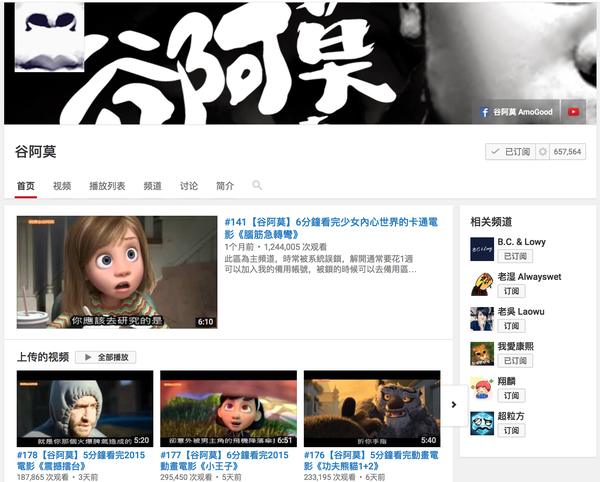

「推荐频道」 Youtube上值得订阅的频道
2015-11-18
用youtube看视频确实比土豆,优酷爽多了,不用看广告而且还基本上支持1080P,下面我就推荐几个我订阅的频道. 以下的频道适合于想要休闲娱乐、放松心情的人，茶余饭后，博君一笑。
-
(一)谷阿莫:https://www.youtube.com/user/AMOGOOD

经常在微博上看到xx分钟看看速度与激情，xx分钟看完何以笙箫默，许多点评都出自谷阿莫之手，这个台湾人用有趣的腔调， 带你领略电影的剧情。
- (二)音乐频道: 一般艺人发出新专辑或出单曲,都会将MV第一时间传送到他们的频道,所以在这里可以看到他们的高清MV.
- 周杰伦:
https://www.youtube.com/user/JVRmuzic

- 林俊杰: https://www.youtube.com/user/jjlin
- Music in HK: https://www.youtube.com/user/universalmusichk
诸如此类的还有很多,不再赘述.感兴趣的明星可以搜索他们的频道,一般香港或者台湾的艺人都可以找得到.还有就是可以搜 一些唱片公司比如华纳这样的,他们也会第一时间把艺人MV发布上来.
- 周杰伦:
https://www.youtube.com/user/JVRmuzic
-
(三)美女教广东话:https://www.youtube.com/channel
想学点广东话的不要错过!!
-
(四)Marques Brownlee: https://www.youtube.com/user/marquesbrownlee
TechnoBuffalo: https://www.youtube.com/user/jon4lakers有很多诸如此类的设备测评频道,只要有新的科技产品发布,都可以看到他们的测评. 看看也能长见识,比如之前我就在这里了解很多Google glass的资讯,买不起的话看看也挺爽的哈哈哈哈!!!
-
(五)TheKellyYang: https://www.youtube.com/user/TheKellyeva
台湾美女分享新鲜事,好玩的东西,主要是我英文太差了,听英文比较吃力,像这样的本土频道还是比较少,值得订阅!